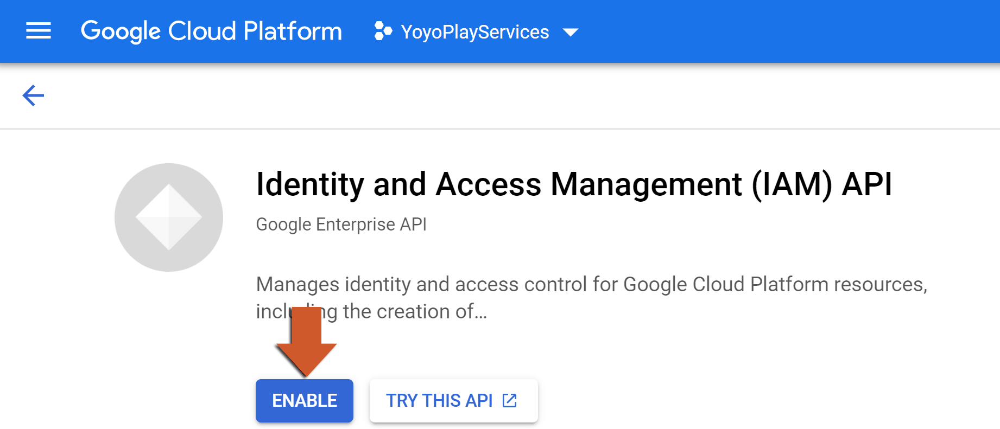
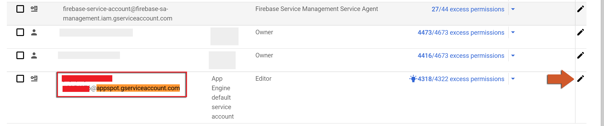
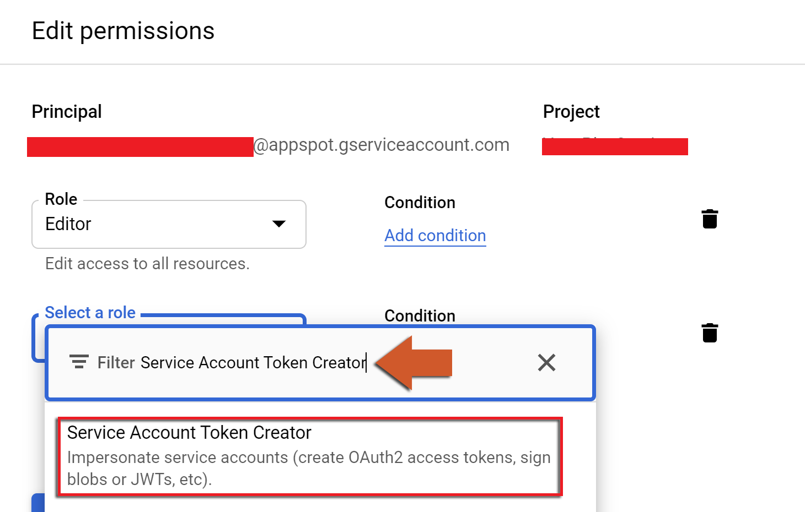
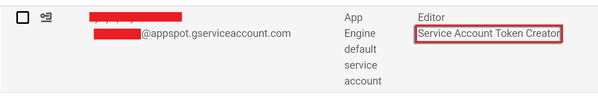
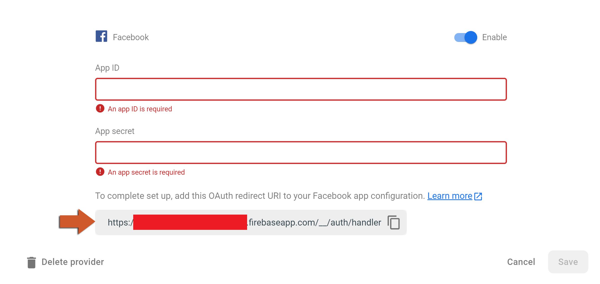
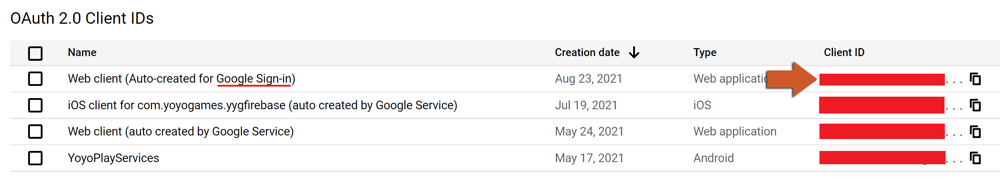
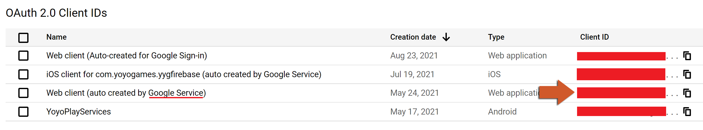

Apple Authentication
This guide will get you up and running using Apple authentication.
Prerequisites
These are the requirements for this setup:
- Apple SignIn extension (download from the marketplace)
Parameters
You will need to obtain these parameters:
- token: Obtained from the callback of
AppleSignIn_CrossPlatform_AuthoriseUserfunction (included in the Apple SignIn extension) ** - provider:
"apple.com" - token_kind:
"id_token" - redirect_uri :
"https://**.firebaseapp.com/__/auth/handler", this value can be obtained from the Firebase Console → Authentication → Sign-In Method → Sign-In Providers → Apple
Functions
The following functions are provided for signing-in / linking / re-authenticating the user:
- FirebaseAuthentication_SignIn_OAuth (if the user is logged out)
- FirebaseAuthentication_LinkWithOAuthCredential (if the user is logged in but has no provider)
- FirebaseAuthentication_ReauthenticateWithOAuth (if the user is logged in and already linked to the Apple provider)
Custom Authentication
Custom Authentication gives to you the ability to sign in using any string as uid and is a really powerful feature, however it does mean that you will be responsible for creating your own unique ids (or using uids from other providers) and encoding/decoding your ids.
Warning
You are required to upgrade to the Blaze plan on Firebase to be able to use this feature.
Prerequisites
The following are the requirements for this setup:
-
Enable Identity and Access Management (IAM) API on the Google Cloud console.
 -
Go to IAM & Admin, search for a service named
**@appspot.gserviceaccount.com(where**is your Firebase project's Project ID ) and press the Edit icon.
 -
On the editor pop-up, click on the " ADD ANOTHER ROLE " button:

-
Select the Service Account Token Creator role:
 -
This is how your services should look like now:
 -
Now you are allowed to create new custom accounts in the Firebase Authentication system, however you will need a server running for creating tokens (for this step we will use the Firebase Cloud Functions extension) with the following code:
exports.customSignUp = functions.https.onRequest((req, res) =>
{
cors(req, res, () =>
{
//And decode here (your uid should be encoded on you GMS project and decoded here)
let uid = req.body.uid;
// Here are some official documentation links on how to create custom tokens
// https://firebase.google.com/docs/auth/admin/create-custom-tokens
// https://firebase.google.com/docs/reference/admin/node/admin.auth.Auth-1#createcustomtoken
admin.auth().createCustomToken(uid).then((customToken) =>
{
res.status(200).send({"customToken":customToken});
return true;
})
.catch((error) =>
{
res.status(400).send({"message":error});
return false;
});
});
});Parameters
You will need to obtain the following parameters:
- token: Obtained from the callback using
http_requestto thecustomSignUpAPI method created above.
Functions
This is the function provided for signing in the user:
- FirebaseAuthentication_SignInWithCustomToken (if the user is logged out)
Email Authentication
This guide will get you up and running using Email authentication.
Functions
The following functions are provided for signing-in / linking / re-authenticating the user:
- FirebaseAuthentication_SignUp_Email (if the user is not signed up)
- FirebaseAuthentication_SendEmailVerification
- FirebaseAuthentication_SendPasswordResetEmail
- FirebaseAuthentication_SignIn_Email (if the user is logged out)
- FirebaseAuthentication_LinkWithEmailPassword (if the user is logged in but has no provider)
- FirebaseAuthentication_ReauthenticateWithEmail (if the user is logged in and already linked to the email provider)
Facebook Authentication
This guide will get you up and running using Facebook authentication.
INFO
The authentication works with both SDK and REST API versions.
Prerequisites
These are the requirements for this setup:
- Facebook Extension (download from the marketplace)
Parameters
You will need to obtain these parameters:
- token: Obtained from the call to the
fb_asscesstokenfunction (included in the Facebook Extension) ** - provider:
"facebook.com" - token_kind:
"access_token" - redirect_uri : This value can be obtained from Firebase Console → Authentication → Sign-In Method → Sign-In Providers → Facebook (see the image below)

Functions
The following functions are provided for signing-in / linking / re-authenticating the user:
- FirebaseAuthentication_SignIn_OAuth (if the user is logged out)
- FirebaseAuthentication_LinkWithOAuthCredential (if the user is logged in but has no provider)
- FirebaseAuthentication_ReauthenticateWithOAuth (if the user is logged in and already linked to the phone provider)
GameCenter Authentication
This guide will get you up and running using GameCenter authentication.
Warning
The SDK is required for this authentication meaning it will only work for iOS targets.
Prerequisites
These are the requirements for this setup:
- GameCenter extension (download from the marketplace)
- Log in using the
GameCenter_LocalPlayer_Authenticatefunction
Functions
The following functions are provided for signing-in / linking / re-authenticating the user:
- SDKFirebaseAuthentication_SignIn_GameCenter (if the user is logged out)
- SDKFirebaseAuthentication_LinkWithGameCenter (if the user is logged in but has no provider)
- SDKFirebaseAuthentication_ReauthenticateWithGameCenter (if the user is logged in and already linked to the GameCenter provider)
Google Authentication
This guide will get you up and running using Google authentication.
Prerequisites
These are the requirements for this setup:
- The Google SignIn extension (download from the marketplace).
-
Get your webClientID , generated by Google Sign-in from the Cloud Console (as shown on the image below)
 -
In your project you need to call
GoogleSignIn_Showwith the project's webClientID .
Parameters
You will need to obtain these parameters:
- token: Obtained from the callback of the
GoogleSignIn_Showfunction (included in the Google SignIn extension) ** - provider:
"google.com" - token_kind:
"id_token" - redirect_uri :
""
Functions
The following functions are provided for signing-in / linking / re-authenticating the user:
- FirebaseAuthentication_SignIn_OAuth (if the user is logged out)
- FirebaseAuthentication_LinkWithOAuthCredential (if the user is logged in but has no provider)
- FirebaseAuthentication_ReauthenticateWithOAuth (if the user is logged in and already linked to the phone provider)
Google Play Services Authentication
This guide will get you up and running using Google Play Services authentication.
Prerequisites
These are the requirements for this setup:
- Google Play Services extension (download from the marketplace)
-
Get your webClientID , generated by Google Services from the Cloud Console (as shown on the image below)
 -
Call the function
GooglePlayServices_RequestServerSideAccessusing the webClientID to get the authorization code from the google server.
Parameters
You will need to obtain these parameters:
- token: Obtained from the call to the
GooglePlayServices_RequestServerSideAccessfunction (included in the Google Play Services extension, check documentation for more details) ** - provider:
"playgames.google.com" - token_kind:
"serverAuthCode" - redirect_uri :
""
Functions
The following functions are provided for signing-in / linking / re-authenticating the user:
- FirebaseAuthentication_SignIn_OAuth (if the user is logged out)
- FirebaseAuthentication_LinkWithOAuthCredential (if the user is logged in but has no provider)
- FirebaseAuthentication_ReauthenticateWithOAuth (if the user is logged in and already linked to the phone provider)
Phone Authentication
Phone authentication requires you to follow these 5 steps:
- Get your recaptchaSiteKey from the FirebaseAuthentication_RecaptchaParams function callback.
- Solve the reCAPTCHA puzzle, for this you will need to host a website (demonstration included in Included Files).
- The previous step will return you a recaptchaToken , which needs to be passed into your game (in the example we use Firebase Real Time Database extension to achieve this).
- ** Send the verification code to the user, using the function FirebaseAuthentication_SendVerificationCode and get the sessionInfo from the callback.
- You should now have SMS code (request the user for it) and the sessionInfo .
Functions
The following functions are provided for signing-in / linking / re-authenticating the user:
- FirebaseAuthentication_SignInWithPhoneNumber (if the user is logged out)
- FirebaseAuthentication_LinkWithPhoneNumber (if the user is logged in but has no provider)
- FirebaseAuthentication_ReauthenticateWithPhoneNumber (if the user is logged in and already linked to the phone provider)